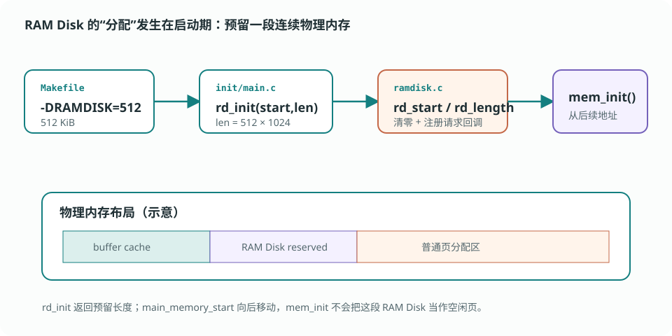
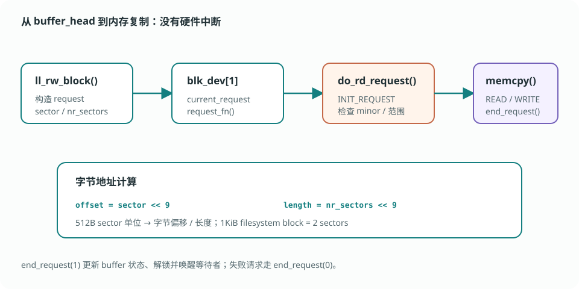
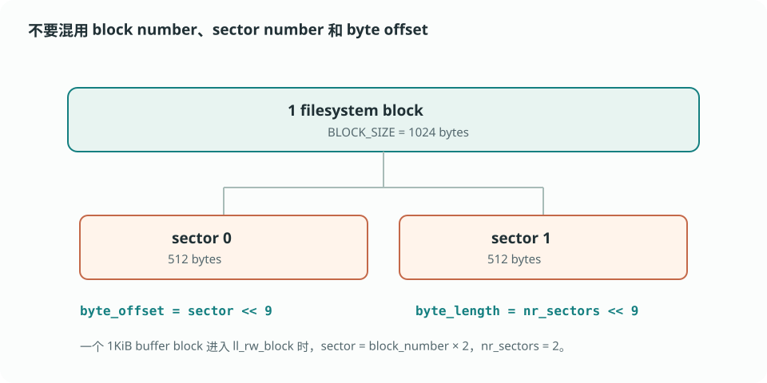

Linux 0.11 RAM Disk：源码追踪与可复现实验
Linux 0.11 已经包含一个 RAM Disk 块设备驱动。真正有价值的综合项目不是复制现代驱动 API 写一个“新驱动”，而是把原版驱动的构建开关、启动期内存预留、请求队列、设备号和扇区边界完整走通。
ramdisk.c · request_fn · major 1 / minor 1先纠正项目：0.11 已经有 ramdisk.c
原版源码树的 kernel/blk_drv/ramdisk.c 由 Theodore Ts'o 编写，使用 major 1，并实现 do_rd_request()、rd_init() 和 rd_load()。因此，把“从零实现一个 ramdisk 驱动”作为 0.11 的入门项目，会重复现有功能；更糟的是，常见现代示例会混入 0.11 没有的 kmalloc()、GFP_KERNEL、struct request_queue 等接口。
本章把项目重构成三个可验证的目标：理解原版实现、在隔离的旧环境中启用并读写它、最后提出一个边界检查改进。每一步都明确区分原版代码、教学推导和建议修改。
不要把现代驱动代码伪装成 0.11 可编译代码。0.11 使用的是 blk_dev[major].request_fn 和全局 request 表；它没有现代 blk-mq、gendisk 或通用 kmalloc 驱动初始化套路。
构建开关：RAMDISK 以 1KiB 块为单位
0.11 顶层 Makefile 中的默认配置是注释状态：RAMDISK = #-DRAMDISK=512。启用时，将它改为 RAMDISK = -DRAMDISK=512，编译器命令就会获得 -DRAMDISK=512。这个数字不是字节数，而是内核保留区域的 KiB 数量；init/main.c 传给 rd_init() 的长度是 RAMDISK * 1024 字节。
# 原始默认值（注释掉的编译宏）
RAMDISK = #-DRAMDISK=512
# 实验配置：512 KiB RAM Disk
RAMDISK = -DRAMDISK=512驱动对象本身已经列在 kernel/blk_drv/Makefile 的 OBJS = ll_rw_blk.o floppy.o hd.o ramdisk.o 中。是否真正预留 RAM Disk 空间由顶层宏控制，而不是临时往 Makefile 中加入一个现代驱动对象。
启动期预留：rd_init 不调用 kmalloc
init/main.c 先根据探测到的内存大小决定 buffer cache 结束位置，再令 main_memory_start = buffer_memory_end。若定义了 RAMDISK，就调用 rd_init(main_memory_start, RAMDISK*1024)，并把它返回的长度加到 main_memory_start 上，最后才调用 mem_init(main_memory_start, memory_end)。
这个顺序意味着：RAM Disk 占用的物理区间先被划走，普通页分配器从它之后的地址开始管理可用内存。rd_init() 把 rd_start 指向传入的物理内存起点，记录 rd_length，清零该区间，并把 blk_dev[1].request_fn 指向 do_rd_request()。这里没有动态堆分配。
main_memory_start = buffer_memory_end;
#ifdef RAMDISK
main_memory_start += rd_init(main_memory_start, RAMDISK*1024);
#endif
mem_init(main_memory_start, memory_end);
块请求如何变成 memcpy
文件系统通过 ll_rw_block() 请求块 I/O。ll_rw_blk.c 按主设备号找到 blk_dev[major]，将 struct request 放入该设备的请求链表；如果队列原来为空，就调用设备的 request_fn()。RAM Disk 没有硬件中断或磁盘控制器寄存器，它的 request handler 直接把内存区域当作磁盘。
do_rd_request() 首先展开 INIT_REQUEST，取出当前请求。请求的 sector 和 nr_sectors 都以 512 字节扇区为单位，所以内存偏移是 sector << 9，传输字节数是 nr_sectors << 9。写请求把请求缓冲区复制到 RAM Disk；读请求则反向复制。完成后调用 end_request(1) 解锁 buffer、唤醒等待者并推进请求队列。

addr = rd_start + (CURRENT->sector << 9);
len = CURRENT->nr_sectors << 9;
if (MINOR(CURRENT->dev) != 1 ||
addr + len > rd_start + rd_length) {
end_request(0);
goto repeat;
}
if (CURRENT->cmd == WRITE)
memcpy(addr, CURRENT->buffer, len);
else if (CURRENT->cmd == READ)
memcpy(CURRENT->buffer, addr, len);
end_request(1);设备号、扇区单位和根文件系统装载
原版 ramdisk.c 设置 #define MAJOR_NR 1，并在请求处理时拒绝 minor number 不等于 1 的请求。设备节点因此应使用 major 1、minor 1，例如 /dev/ram 对应的 mknod /dev/ram b 1 1；把它写成 minor 0 的 /dev/ram0，会被这份驱动的条件检查拒绝。
这里有两个容易混淆的块大小：文件系统 BLOCK_SIZE 是 1024 字节，而底层 request 使用 512 字节扇区。ll_rw_block() 为一个 1KiB buffer block 设置 sector = b_blocknr << 1、nr_sectors = 2；RAM Disk 驱动再通过左移 9 位换算成字节偏移和长度。
rd_load() 是另一条启动路径：硬盘初始化代码 sys_setup() 在 mount_root() 之前调用它。若当前根设备是软盘（major 2），它会从软盘第 256 个 1KiB block 附近检查 MINIX superblock，确认镜像大小不超过 RAM Disk 容量后逐块复制；成功后把 ROOT_DEV 改成 0x0101（major 1、minor 1）。因此它是“从软盘预载根文件系统到 RAM Disk”的路径，不是 rd_init() 本身负责挂载文件系统。

可复现实验：读写同一段 RAM Disk
以下步骤假设你已经准备好与 Linux 0.11 匹配的旧工具链、启动镜像和可启动 root filesystem。0.11 的汇编器/链接器和用户态 a.out 格式都很古老；现代发行版上的原生编译失败，不代表 RAM Disk 源码逻辑有误。请在快照或可丢弃的模拟磁盘中操作。
- 从 v0.11 tag 获取原始源码，检查顶层 Makefile 和
kernel/blk_drv/Makefile。 - 将
RAMDISK = #-DRAMDISK=512改为RAMDISK = -DRAMDISK=512，然后在源码根目录执行make Image。不要执行旧 Makefile 的make disk，该目标会直接写物理软驱设备。 - 使用与你的 root filesystem / ROOT_DEV 设置匹配的 QEMU 磁盘启动配置启动镜像；本实验不假定所有人的 rootfs 文件名或 IDE 布局相同。
- 在系统内创建正确设备节点（若 rootfs 尚未提供）：
mknod /dev/ram b 1 1。 - 写满 512 个 1KiB block 的零数据，再读回到普通文件：
dd if=/dev/zero of=/dev/ram bs=1024 count=512
dd if=/dev/ram of=/tmp/ramdisk-readback bs=1024 count=512
cmp /dev/zero /tmp/ramdisk-readback预期观察：第一条命令写入 512KiB；第二条命令读回相同长度；若 RAM Disk 的读写路径正确且期间没有其他写入，cmp 不应报告字节差异。若设备节点 minor 错误，或请求超出 rd_length，驱动会通过 end_request(0) 走失败完成路径。
验收诚实性：上面是基于原版源码的实验步骤与预期结果，不代表本仓库已经在真实 1991 工具链、QEMU 和某个 rootfs 组合上执行过该实验。只有附上实际启动环境、命令输出和读回结果，才能将它标记为运行通过。
扩展练习：用整数区间做边界检查
原版代码用指针表达式 addr + len > rd_start + rd_length 判断请求是否越过 RAM Disk 末尾。作为教学扩展，可以先用 sector 数量做减法式边界检查，避免先计算可能溢出的指针终点。下面是建议改进片段，不是 v0.11 原始源码：
unsigned long capacity = ((unsigned long)rd_length) >> 9;
unsigned long sector = CURRENT->sector;
unsigned long count = CURRENT->nr_sectors;
if (MINOR(CURRENT->dev) != 1 ||
!count ||
sector > capacity ||
count > capacity - sector) {
end_request(0);
goto repeat;
}
addr = rd_start + (sector << 9);
len = count << 9;先检查 sector > capacity，再计算 capacity - sector，可以避免无符号减法下溢；检查 count > capacity - sector 则能避免直接用 sector + count 造成加法溢出。该片段仍需考虑目标编译器的整数宽度、长度对齐、请求来源和驱动调用约束，不能只凭静态阅读就宣称安全。
为什么 procfs 不是 0.11 的小项目
原章节把“在 0.11 上实现 procfs”描述成只需添加 file_system_type、read_super 和几个虚拟 inode。这个设计把后续版本接口移植回了 0.11。v0.11 的 include/linux/fs.h 有 file_operations 和 inode_operations，但没有后来那套 file_system_type 注册结构与 super_operations 分派体系。
到 v0.96c，fs/super.c 已经有文件系统注册表；v0.98-pl1 README 则把 proc-fs 列为源码树中的测试功能，并明确不建议用于真实使用。因此 procfs 可以作为“后续版本 VFS 扩展”的高级研究题，但不应伪装成在 0.11 上几行代码即可完成的备选小实验。
原始源码与验收边界
- v0.11 · Makefile：RAMDISK 宏、编译参数、Image 与 disk 目标。
- v0.11 · init/main.c：buffer_memory_end、rd_init 预留和 mem_init 的顺序。
- v0.11 · kernel/blk_drv/Makefile：ramdisk.o 已列入 OBJS；blk.h：major 1、request_fn、CURRENT、INIT_REQUEST 和 end_request。
- v0.11 · kernel/blk_drv/ramdisk.c：minor 1 检查、sector 左移 9 位、memcpy、rd_init 和 rd_load。
- v0.11 · ll_rw_blk.c：请求队列和 request_fn 调用；hd.c：sys_setup 在 mount_root 前调用 rd_load。
- v0.11 · include/linux/fs.h；v0.96c · fs/super.c；v0.98-pl1 · README：用于核实 procfs/VFS 的版本边界。
完成本章后，读者应该能从 Makefile 宏一路追到内存预留、request 队列、sector 地址换算和最终 memcpy，并能指出哪些步骤是原版实现、哪些是建议硬化、哪些仍需要真实模拟器验收。